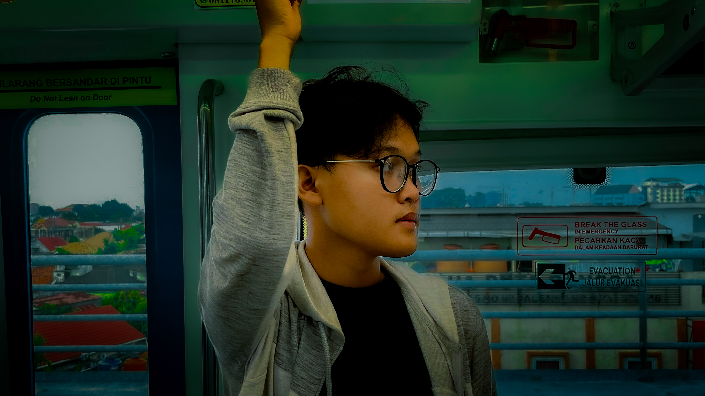
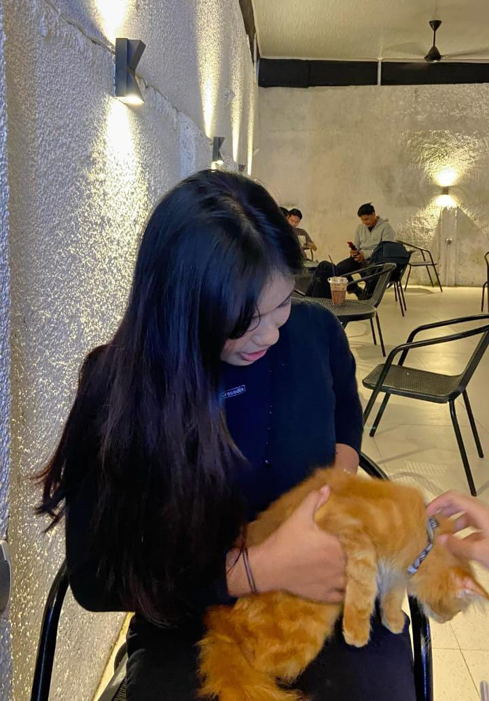
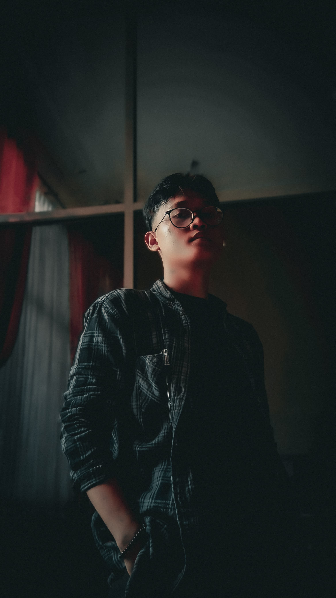
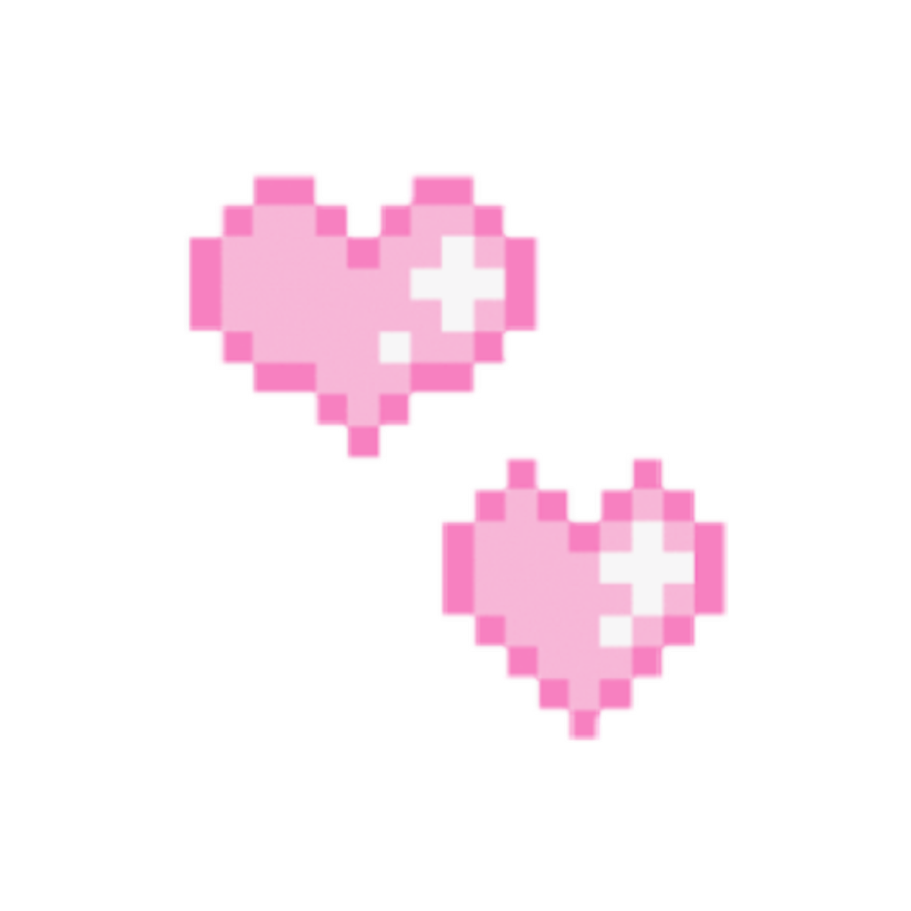
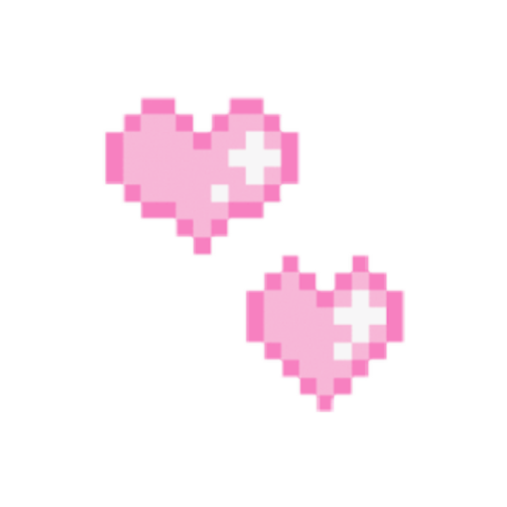

Ilham Abdillah
@iam.abdillh
💡 Skill: Editing, Fotografi, Videografi
🎯 Fun Fact: Introvert tapi bisa jadi extro parah
🔥 Hobi: Musik, fotografi, gitar
"Ever since that day, everything feels different — like the world shifted in a way only I can see."

Claudya
@cllaudye.
💡 Skill: Manajemen waktu, mudah beradaptasi, dan kemampuan komunikasi
🎯 Fun Fact: Sangat picky eater
🔥 Hobi: Olahraga
"Aku adalah pribadi yang ceria dan selalu berusaha memberi energi positif ke sekitar."

Trisa Aprilia
@wxp3sa
💡 Skill: Memasak dan berenang
🎯 Fun Fact: Suka banget warna hijau dan dinosaurus
🔥 Hobi: Dengerin musik dan main Roblox bareng Nay dan Ilham
"Call me a dinosaur — rare, cool, and a little ancient at heart."

Nayla Syahfira Ramadhani
@nayrmdhni._
💡 Skill: Voice over, nulis cerpen, kreatif ide
🎯 Fun Fact: Suka nonton animasi anak kecil
🔥 Hobi: Nonton, nulis cerita random
"Some stories aren’t meant to be explained — just felt."
 
